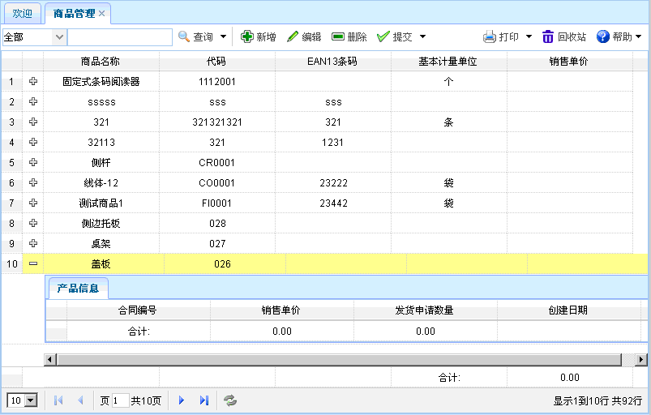
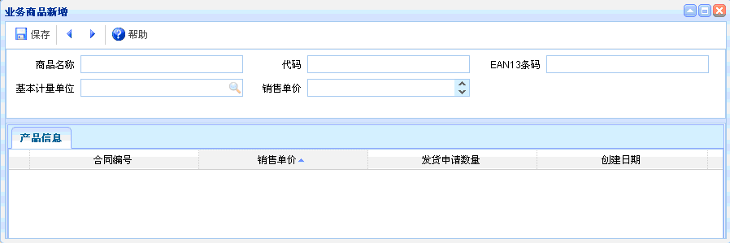
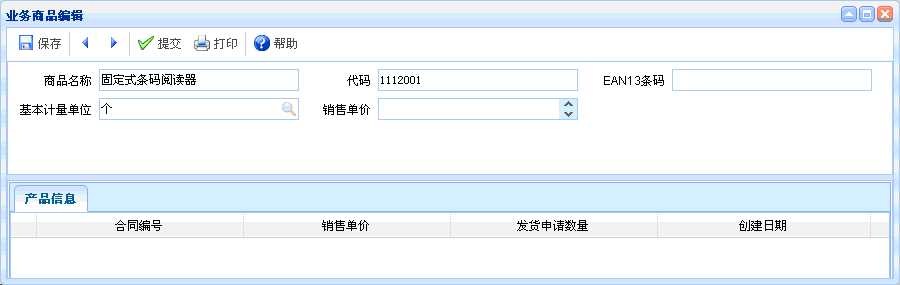

商品管理
商品管理
概述：销售出的商品基本信息
功能介绍：点击【商品管理】进入商品管理页面，如下图所示。功能主要包括：查询、新增、编辑、删除、提交。

图表6-x2-1【商品管理】可查看其产品信息。
图表6-x2-1【商品管理】可查看其产品信息。
【查询】：通过设置查询条件，查询出符合条件的数据，直接点击查询按钮即可列出相关信息。查询中包含高级查询。
【新增】：业务商品新增，有搜索图案的要进行查询，并可对产品信息进行相关操作。 如下图所示。新增完毕，点击保存。

图表6-x2-2【新增】
图表6-x2-2【新增】
【编辑】：选中某项商品管理信息，点击编辑按钮后，出现如下图所示内容。可对商品管理信息进行编辑、提交操作。

图表6-x2-3【编辑】
图表6-x2-3【编辑】
【删除】：选中某项商品管理信息后，点击删除，即可删除没有需要的信息，已提交的单据不能删除。
【提交】：选中某项商品管理信息后，点击提交，可提交该商品管理信息，已提交的数据不能再次提交，也可撤消提交。
 注意事项
注意事项
1、提交后的商品不能再次进行编辑。如果需要进行修改，需要提交人撤消提交后，才能再次进行编辑。
 常见问题
常见问题
1、？
2、？
3、？